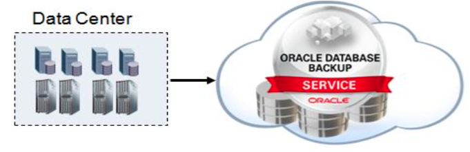
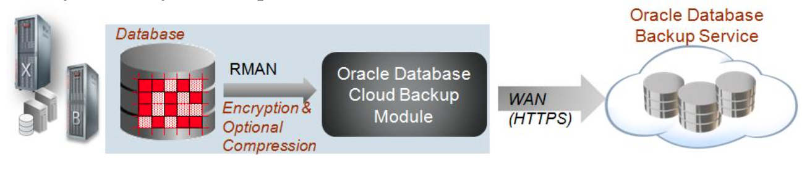

Database Backup Service
Secured, protected, elastic cloud storage for Oracle database backups
Oracle Database Backup Service is a secure, scalable, reliable, and on-demand Oracle public cloud storage solution for storing Oracle Database backups. Businesses can access additional storage capacity in minutes with zero hardware investment. The Oracle Database Backup Service can be accessed from anywhere, at anytime, and from any Oracle database server connected to the Internet.
A Robust and Scalable Oracle Database Backup Storage Solution
Oracle Database Backup Service provides a high performance, redundant and highly available cloud storage solution for Oracle database backups. Scalable and elastic by design, enterprises using the Oracle Database Backup Service will assured that their backup storage resources will always match the needs of their growing business data.
- Simple. Oracle Database Backup Service provides an easy and convenient option to store database backup data in the cloud which can be accessible over the Internet.
- Offsite Storage. By storing database backups in the cloud, the data is protected from local failures and available immediately for recovery when needed.
- Cost effective. Simple and low cost cloud backup with no additional license cost for using the service.
- Faster Deployment. Download a client side backup module and integrate with the Recovery Manager (RMAN) and start to perform cloud based backup and recovery operations using the familiar RMAN commands within minutes by just configuring the destination to the Oracle cloud.
- End-to-End Security. Backup data is encrypted at the source with keys kept locally, optionally compressed, securely transmitted to the cloud which enables end-to-end security, reliability and data protection. 
- High Reliability. Whenever data is written to the Oracle Database Backup Service, it is replicated across multiple storage nodes within the same region. This replication strategy ensures that data is protected from hardware failures and data corruption.
- On-demand Storage. The elastic nature of the Oracle Database Backup Service allows businesses to buy more storage capacity on demand as their need increases.
- Continuous Accessibility. Backups stored in the Oracle Database Backup Service are always accessible – much in the same way local disk backups are. Restores are faster and the down time is reduced from days to hours/minutes compared to cases where tapes must be retrieved from the offsite storage location.
- Unlimited Scaling and No Up-front Capital Expense. Oracle Database Backup Service provides virtually unlimited capacity with no up-front capital expenditure. Consequently, users need not worry about provisioning adequate tapes or local storage to hold the required backup data.
- Easy Provisioning of Test and Dev Environments. As Cloud Backups are accessible from anywhere via the Internet, the backups can be used to quickly clone databases to create custom test, development, or QA environments.
- Seamless Migration between On-Prem and Oracle Cloud. Part of Oracle's strategy of making on-premise and public cloud look exactly the same so customers have full choice and can easily move from on-premise to cloud or vice-versa.
- End-to-End Support. No more multi-vendor support complexity. Oracle provides support for both the client-side as well as the Oracle cloud for faster resolution.